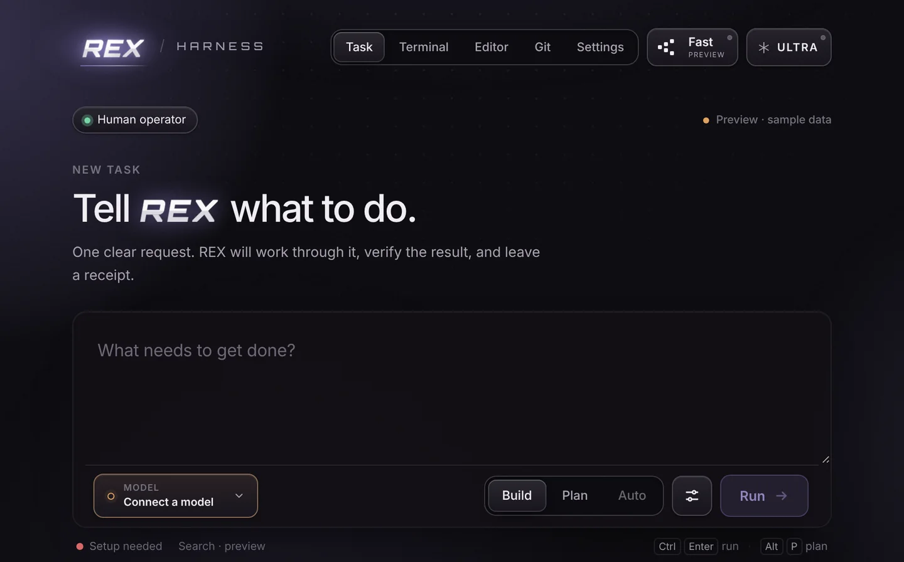

Autonomous mode
Build · Plan · Auto. Auto removes the per-action prompts for a run, and none of its limits. Every action is logged as Ran without asking.
REX Harness runs an AI coding agent under rules it cannot talk its way out of. You approve every change by default. Every run has hard limits. Every result is a signed receipt.
01 Custody
The agent works on a disposable copy of your folder. It proposes a plan, then each file write and command appears as an approval with the exact diff or argument list. Nothing is applied until you review it.
Run without asking? Auto removes the approval prompts for this run, and none of the limits.
Waiting for the agent to propose something…
02 Limits
Steps, tool calls, tokens and time are hard limits. When one is reached, the run stops and says why.
--max-steps--max-tool-calls--max-tokens--timeout-secsrex exec --task "refactor the parser" --workspace . \
--model claude-sonnet-5-5 --bid
# agree to the bid, and it runs: … --bid --accept-bid--bid prints the binding bid, the worst-case dollar ceiling, and stops. The run goes ahead only with --accept-bid.
03 Proof
A run finishes only when its evidence gates pass; the model cannot declare itself done. Every run leaves a receipt signed with your machine’s Ed25519 key, and REX checks it offline.
$ rex exec --task "add --verbose" --workspace . --json > receipt.json
# exactly what the machine that ran it produced?
$ rex verify receipt.json
# does every claim follow from its own evidence?
$ rex replay receipt.jsonA receipt carries
Neither check needs the original workspace.
04 Ultra
Ultra is the same worker model wrapped in a verification institution. Simple asks “does it work?” Ultra asks “how can this be wrong while every green check still passes?” and then goes after those gaps.
The choreography is a diagram of the pipeline in docs/ultra-mode.md, not a recording of a run.
05 Models
Bring an API key, point REX at a local server, or use your ChatGPT plan with Continue with ChatGPT. Keys, sign-in, run history and receipts live in one folder on your machine. REX has no server and no telemetry.
REX connects an account only where the provider’s own documentation allows third-party tools, and says why when it does not. Account policy →
06 Release 0.1.2 · 2026-11-10
Autonomous mode, a working Git status, and the Terminal, Editor, Git and Settings tabs brought up to production quality. The first release since 0.1.1.
Build · Plan · Auto. Auto removes the per-action prompts for a run, and none of its limits. Every action is logged as Ran without asking.
A chip on every tab: branch, ahead and behind, changed files. Amber for changes, red for conflicts.
Terminal, Editor and Git work in the project you open, and stay alive when you switch tabs.
rexLinux x86_64 and Windows, each with a SHA-256 beside it. No Rust toolchain needed.
New task after every run, and a notice when the backend stops answering instead of “Working” forever.
Runs from a fresh clone, with --build, --no-app and --help, and CI that tests it.

07 Install
Download the …x64-setup.exe from the latest release and run the setup wizard.
It is not code-signed yet, so SmartScreen may ask: choose More info → Run anyway. Details →
Any platform. Needs Rust, Node.js 20+ and the Tauri prerequisites.
git clone https://github.com/REX-codebase/rex-harness
cd rex-harness
./quickstart.shInstalls dependencies and the rex CLI, then starts the app. --build for a production build, --no-app for the CLI only.
Linux x86_64. No Rust needed.
curl -fsSL https://raw.githubusercontent.com/REX-codebase/rex-harness/main/scripts/install.sh | shIt checks the download against its published SHA-256 before installing. The script also targets macOS Apple Silicon, but v0.1.2 has no macOS binary attached yet, so build from source there. Windows and other platforms: INSTALL.md →
REX Harness is 0.x: it works and is tested, but expect rough edges.
rex for Windows and Linux x86_64. There is no macOS binary on it yet.